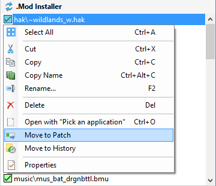
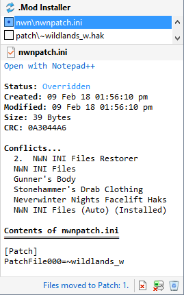

Although the Installer Tool usually creates accurate Installers, it is good practice to review the results after creating a Mod Installer so you can deal with unwanted files, files in the wrong folder and missing files.
You can also use the Installer Wizard Builder to provide more control over which files are used when a Mod Installer is created.
If you correct the problem using Advanced Settings, then you need to redo the Create Installer and check the results to ensure that the issue has been addressed.
You can delete the files you don't want or use the Map Excludes page in Advanced Settings to prevent files or folders being included in Mod Installers. Alternatively, you can use the Installer Wizard Builder to exclude unwanted files.
You can also extract compressed files before you create the Mod Installer and delete folders and files you don't want included prior to clicking Create Installer from the Manage menu.
The Installer Tool uses the file's extension name to determine which Installation or User Files folder to use. Some extension names are associated with more than one folder. For example, files that have a TGA extension can be assigned to the Portraits or Override folders.
You can correct erroneous folder assignments by clicking the Move to Folder from the File menu or add an Exception on the Map Extensions page in Advanced Settings.


If you move the file back to the Hak folder, the patch ini file will be removed.
You may find that files you expected to be included in the Mod Installer have not been added. This is caused by the file's extension name not being defined in the Map Extensions page in Advanced Settings or as a result of the file meeting one of the criteria defined in the Map Excludes page in Advanced Settings.
Use Map Extensions to define the missing extension.
Change Map Excludes to ensure the missing file is included or, if this is an exception, copy the missing file from the downloaded files to the Mod Installer.
Use the Installer Wizard Builder
Download and install Neverwinter Vault Projects
Download and install Mods from other sites
Review Mod information in added files
Customise Mod Installers
Make Mod notes and record information
Add Mods from downloaded files